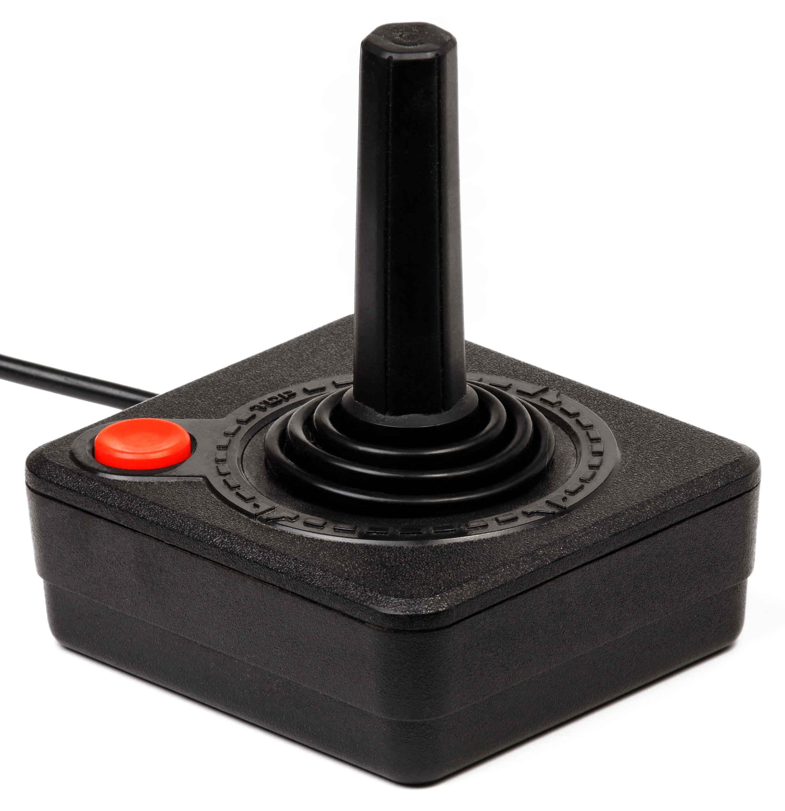

1977 Atari CX40
The Atari 2600 Joystick, formally known as the Atari CX40 Joystick, was the first widely-used cross-platform game controller and is the first modern iteration of game controllers. It was designed and was the official controller for the Atari 2600, which, although wasn't the first console, is still one of the most admired 8 bit consoles ever to be designed. The controller came from a simpler time, and featured a 4-directional Joystick and a singular button to fire with. Despite it obvious surface simplicity, this OG controller, which imitated its era's arcade cabinets, paved the roads of directional standards for future controllers.
The aforementioned Atari CX40 Joystick.
Image Credit: Atari